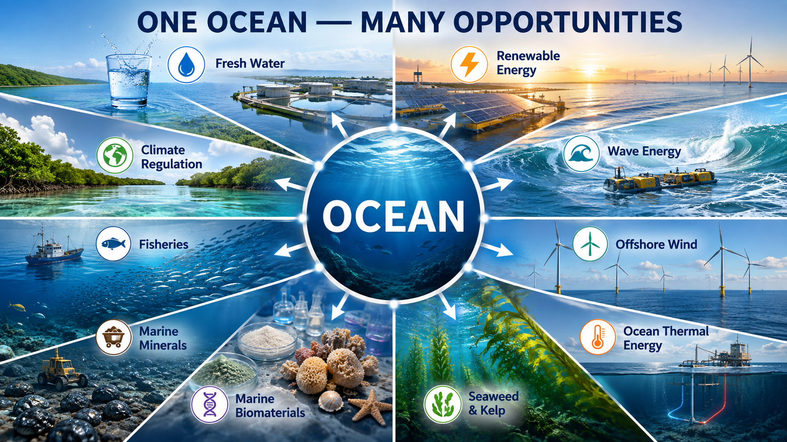

Think Different
Every challenge in nature carries within it the blueprint of its own solution. The future belongs to those who learn to see the opportunity.

Every issue ends with a question; Every reader begins with an answer.
Every challenge in nature carries within it the blueprint of its own solution. The future belongs to those who learn to see the opportunity.

Every issue ends with a question; Every reader begins with an answer.